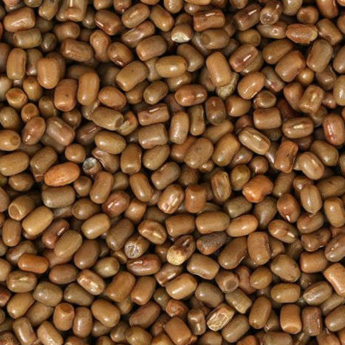

मटकी विषयी माहिती

मटकी
हलकी व मध्यम माळरानाची, पाण्याचा उत्तम निचरा होणारी जमीन या पिकास योग्य असते. पाणथळ, चोपण, क्षारयुक्त जमिनीत या
पिकाची लागवड टाळावी.
उन्हाळ्यात जमिनीची खोल नांगरट करावी.
हेक्टरी ५ टन शेणखत / कंपोस्ट खत द्यावे. मृगाचा पाऊस झाल्यानंतर कुळवाच्या दोन पाळ्या द्याव्यात.
हेक्टरी बियाणे प्रमाण :
१२ ते १५ किलो.
पेरणी अंतर :
दोन ओळीत ३० सें.मी. व दोन रोपात १० सें.मी. ठेवावे.
बीजप्रक्रिया -
१ किलो बियाण्यास २ ग्रॅम थायरम + २ ग्रॅम कार्बेन्डेझीम चोळावे यानंतर २५० ग्रॅम रायझोबियम जीवाणू
संवर्धन १० ते १५ किलो बियाण्यास गुळाच्या थंड द्रावणातून चोळावे.
१२-१५ किलो नत्र आणि २५-३० किलो स्फुरद या प्रमाणे रासायनिक खताची मात्र द्यावी. म्हणजेच ७५ किलो डीएपी प्रति हेक्टर
प्रमाणे पेरणी करताना खत द्यावे.
पीक २०-२५ दिवसाचे असताना पहिली कोळपणी आणि ३० ते ३५ दिवसाचे असताना दुसरी कोळपणी करावी.
पेरणीनंतर ३० ते ३५ दिवस पीक तणविरहीत ठेवावे.